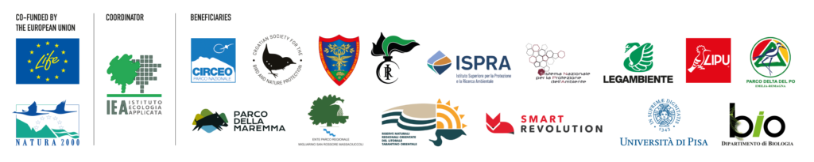

Morski kulik: Ekologija i zaštita vrste
Morski kulik (Anarhynchus alexandrinus) mala je ptica močvarica koja obitava ponajprije na pješčanim plažama, u solanama i lagunama, gdje pronalazi idealne uvjete za prehranu i gniježđenje.
Za ovu vrstu karakteristično je gniježđenje na tlu: najčešće polaže 3 jaja izravno na pijesak.
Zbog toga je izrazito osjetljiva na uznemiravanje od strane ljudi, gaženje i predatore.
Sezona gniježđenja traje od ožujka do srpnja, a u povoljnim uvjetima vrsta može imati i drugo leglo. Međutim, uspješnost gniježđenja trenutno je vrlo mala - u Italiji gubici jaja i mladunaca mogu doseći i do 90 %.
Morski kulik zaštićen je na europskoj razini (Direktiva o pticama), no populacija mu je u opadanju. Njegov opstanak usko je povezan s kvalitetom obalnih ekosustava - zaštitom ove vrste čuvamo i prirodnu ravnotežu naših plaža.
Vrsta se smatra indikatorskom vrstom zdravlja obalnih ekosustava te važnim pokazateljem stanja bioraznolikosti koju je potrebno očuvati.
